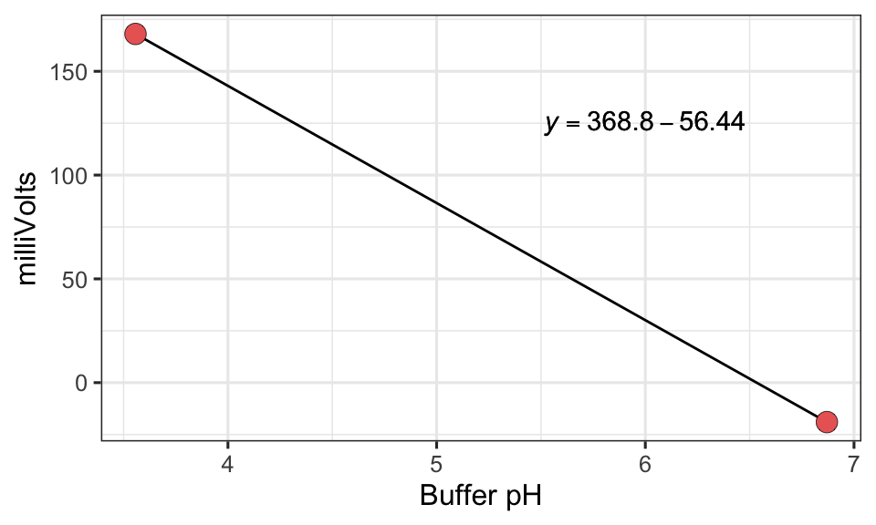
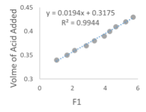

1 Alkalinity
Revised: Grace Wilkinson, March 2023
1.0.1 Purpose:
This procedure describes the steps to potentiometrically titrate water samples with standardized hydrochloric acid to calculate alkalinity according to Andersen, 2002 and USGS National Field Manual for the Collection of Water-Quality Data. The units of alkalinity for this analysis are microequivalents of carbonate per liter.
1.0.2 Sample Holding Time:
≤ 14 days @ 4° C unpreserved
1.0.3 Materials Required for Titration
(see materials for regents in Section 1.5):
- MilliQ water
- 0.05N Hydrochloric Acid
- 1000 ueq/L Sodium Carbonate standard
- pH meter and probe
- pH buffers
- Analytical balance
- P200 manual, adjustable pipette
- P100 electronic, adjustable pipette
- Pipet tips
- Small, graduated cups for titration
- Micro-stirbar
- MilliQ squirt bottle
- Kimwipes
1.0.4 Glassware Preparation:
The glass jar to hold waste rinses and the graduated cups used for titration should be rinsed with DI water from the tap at the sink and set upside down to dry.
1.0.5 Personal Protective Equipment / Waste Disposal:
Nitrile gloves and eye protection should be worn while titrating. Always use chemical resistant gloves (not latex), safety glasses, lab coat, and a fume hood while using concentrated acids to prepare the 0.05N HCl. This is not only for your protection, but also to prevent contamination of samples. Proper personal protective equipment is always required for safety and contamination prevention.
1.0.6 Quality Assurance/Quality Control:
- Blind samples for analysis (i.e., field duplicates)
- Triplicate analysis of standard solution
1.0.7 Waste Disposal:
Most of the reagent solutions used in this procedure can go down the drain; however the pH should be near neutral (pH 5 – 8). Flush during and after disposal by running tap water. Excess dry reagents from preparing the stock can go in the trash.
Consumables Ordering: Item Catalog # Item Catalog # Na2CO3 salt Fisher AA3648522 Buffer 3.557 (Ricca) Fisher 149816 Optima HCl (500 mL) Fisher A466500 Buffer 6.87 (Ricca) Fisher 154016
1.0.8 Consumables Ordering:
| Item | Catalog # | Item | Catalog # |
| Na2CO3 salt | Fisher AA3648522 | Buffer 3.557 (Ricca) | Fisher 149816 |
| Optima HCl (500 mL) | Fisher A466500 | Buffer 6.87 (Ricca) | Fisher 154016 |
1.1 Preparing for Analysis
1.1.1 Remove samples for analysis from the fridge to allow them to warm up to room temperature prior to analysis.
1.1.2 Turn on the pH probe by pressing any key. Make sure it is reading in mV; if not, press ‘MODE’ until mV is being read. NOTE: put the meter on “Standby” after analysis
1.1.3 Prepare the pH probe for analysis. NOTE: follow these directions in reverse to store the pH probe after analysis
1.1.3.1 Remove the storage solution and parafilm from the probe
1.1.3.2 Check that there is enough liquid in the probe
1.1.3.3 Rinse the probe with MilliQ water from the squirt bottle and dab with a Kimwipe. NOTE: Do not rub the probe with a Kimwipe as this creates static.
1.1.4 Using the pH probe, measure the standard buffers (pH = 3.557 and 6.87) to create a calibration curve.
1.1.4.1 Place the pH probe in the buffer solution and allow the reading to stabilize. Record the millivolts (mV) on the sample data sheet.
1.1.4.2 Rinse off the pH probe with MilliQ water and dab dry with a Kimwipe
1.1.4.3 If the millivolts are not close to the values recorded below, the pH probe may be faulty or need recalibration. Consult with the lab manager before proceeding.
| Buffer pH | millivolts |
| 3.557 | 168 |
| 6.87 | -19 |
1.1.5 Make sure that all the sample cups and stir bars are clean and dry.
1.1.6 Turn on the electronic micropipette.
1.2 Analysis of Standard
1.2.1 Place a sample cup with a microstir bar on the analytical balance. Tare the balance.
1.2.2 Pour and pipette 16 ± 0.1 mL of the 1000 µe/L standard into the sample cup on the balance. Remember, 16 mL = 16 g.
1.2.3 Record the mass of the standard sample on the standards data sheet.
1.2.4 Pour an aliquot of 0.5 N HCl into one of the plastic cups and cover with parafilm for storage. This will be the working acid solution you use for titrations and pre-dosing.
1.2.5 Pre-dose the standard sample with 0.2-0.4 mL of 0.5 N HCl acid. Remember, 100 µL = 0.1 mL
1.2.6 Place the standard sample on the stir plate and carefully position the pH probe so that is submerged in the sample without touching the sides or the microstir bar. Turn on the stir plate.
1.2.7 Using the electronic micropipette, add 0.01 mL aliquots of HCl until the meter reads 120 mV. Keep track of the volume added!
1.2.7.1 Record the pre-dosing volume and volume added in the following step along with the mV reading on line 1.
1.2.7.2 Do not record any readings or volumes until the mV reading is greater than 120 mV.
1.2.8 Add an additional 0.01 mL aliquot of acid to the standard sample and let the pH reading stabilize. Record the new volume and mV.
1.2.9 Repeat this process for 10 total aliquots of 0.01 mL of acid. Record the volume and mV reading each time.
1.2.10 Cleaning up the standard sample:
1.2.10.1 Dump the sample down the sink.
1.2.10.2 Rinse off the pH probe with MilliQ water and dab dry with a Kimwipe
1.2.11 Repeat steps from Section 1.2.1 - Section 1.2.10 twice more for a total of three standard sample readings.
1.2.12 Compare the amount of acid added to reach 120 mV and the mV readings thereafter. If the standard samples are wildly different from each other, the pH probe or the standard solution may be compromised. Do not continue with sample analysis in this instance and seek guidance from the Lab Manager.
1.3 Analysis of Samples
Follow the same procedure described in Section 1.2.1 - Section 1.2.10 above for each sample. NOTE: the pre-dosing volume is different for each LTER lake.
| Abbreviation | Lake Name | Pre-Dosing Volume |
|---|---|---|
| AL | Allequash Lake | 0.2 mL |
| SP | Sparkling | 0.2 mL |
| TR | Trout Lake | 0.2 mL |
| BM | Big Muskellunge | 0.1 mL |
| CR | Crystal lake | None |
| CB (Bog 27.2) | Crystal Bog | None |
| TB (Bog 12.15) | Trout Bog | None |
| Abbreviation | Lake Name | Pre-Dosing Volume |
|---|---|---|
| FI | Fish Lake | 0.7–0.9 mL |
| WI | Wingra | 0.9–1.1 mL |
| ME | Mendota | 0.9–1.1 mL |
| MO | Monona | 0.9–1.1 mL |
| WA | Waubesa | 0.9 mL |
| KE | Kegonsa | 0.9 mL |
1.4 Calculations
There is a calculation spreadsheet available on the shared drive. However, if the spreadsheet is not available or becomes corrupted, the steps below can be used to calculate alkalinity.
1.4.1 Use the calibration buffers to calculate a standard curve relating mV (millivolts) to pH. Calculate the slope (mstd) and intercept (bstd).
In this example, the slope (mstd) is -56.44 and the intercept (bstd) is 368.8. The slope should always be negative for the standard curve and the coefficients should be similar to the values in this example. If not, the pH probe may be faulty. Try calibrating.
1.4.2 Using the standard curve coefficients, calculate the pH for each point in the sample titration. \[ pH = {(mV-\ b_{std})\over m_{std}} \]
1.4.3 The pH from the sample titration, the initial sample volume (mL), and volume of acid added (mL) are used to calculate F1 for each point in the sample titration. \[ F1 = 1000 \times {Volume Acid Added + Sample Volume \over Sample Volume} \times 10^{-pH} \]
1.4.4 Regress the volume of acid added (mL) versus F1. The intercept (bF1) of this regression (mL) will be used to calculate alkalinity.

In this example, the intercept (bF1) is 0.3177. The slope should always be positive for this relationship and the R2 value should be >0.98. If not, the pH probe may be faulty, the pipette calibration is incorrect, or the analyst was not careful with pipetting. Try calibrating or reanalysis of the sample.
1.4.5 Calculate alkalinity (µEg/L) using molarity of the titration acid (nominally 0.05 N, but needs to be determined for each batch), initial sample volume (mL), and \(b_{F1}\).
\[ Alkalinity ({µEq \over L}) = {b_{F1} \times Titrant Molarity \over Sample Volume} \times 1e6 \]
1.5 Preparation of Standards and Reagents
1.5.1 Preparation of 1000 µEq L-1 standard for alkalinity titration
Requires sodium carbonate (Na2CO3), 2 L of milliQ water, 2L volumetric flask, and standard solution storage bottles. The mathematical justification for the recipe below (note, there are 2 equivalents of Na+ per mol of Na2CO3):
\[ 0.1061 g\:Na_2CO_3 \times {1mol\:Na_2CO_3 \over 105.99g\:Na_2CO_3} \times {1e6\:µEq \over Eq} \times {2Eq \over mol} \times {1 \over 2L} = {1001\:µEq \over L}\]
1.5.1.1 Dry approximately 0.2 g of sodium carbonate (Na2CO3) salt in the drying oven for at least 3 hours prior making the standard
1.5.1.2 Label a 2 L volumetric flask and fill approximately half way with milliQ
1.5.1.3 Weigh out 0.1061 g of Na2CO3 salt using a weigh boat and the analytical balance. Add the salt to the volumetric flask with milliQ water (previous step)
1.5.1.4 Cap the volumetric flask with parafilm or the glass stopper, and swirl to dissolve and combine.
1.5.1.5 Fill the volumetric flask to the 2L mark with milliQ water and invert to mix.
1.5.1.6 Dispense the standard solution into the clean and labeled standard storage solution bottles. NOTE: the label should include the chemical composition, date of preparation, and preparer’s initials.
1.5.2 Preparing 0.05 M HCl titration solution or alkalinity titration
Requires Fisher Brand Optima HCl, milliQ water, and a 1 L volumetric flask. Note, that for this solution, molarity is equivalent to normality because there is 1 H+ per Cl-. The mathematical justification for the recipe below:
For 100 g of solution, there will be 34 g of HCl, therefore: \[ 34g\:HCl \times {1mol\:HCl \over 36.4611g\:HCl} = 0.9325mol\:HCl\]
The specific gravity (density) of HCl is 1.18 g/mL: \[ 100g\:solution \times {1mL\:solution \over 1.18g \:HCl} \times {1L\:solution \over 1000mL} = 0.0847L\:solution\]
\[{0.9325mol\:HCl \over 0.0847L\:solution} = 11.01M\:(mols/L)\]
Based upon M1V1 = M2V2: \[V1 = {{0.05\:HCl \times 1000mL}\over 11.01M} = 4.54 mL\]
1.5.2.1 Fill the volumetric flask with ~800 mL of milliQ water.
1.5.2.2 Using a pipette, dispense 4.54 mL of HCl into the volumetric flask
1.5.2.3 Fill the volumetric flask to the 1 L mark with milliQ water. Cap and invert to mix.
1.5.3 Standardizing the HCl titration solution
Requires titrating the 1000 µEq L-1 standard multiple times and the intercept of F1 ~ volume of acid added (Section 1.4.4) is averaged to determine molarity.
1.5.3.1 Following the methods in Part 2 of this protocol, titrate at least 10 standard solution samples of 16 mL.
1.5.3.2 Enter the data into the calculation spreadsheet (based on calculations in Section 1.4 of this protocol) and record the intercept.
1.5.3.3 Average the intercepts from the 10 titrations of standard solution and use in the following equation to calculate molarity (equivalent in this case to normality): \[{1000 \over 1e6} \times {16mL \over avg.intercept} = molarity\:of\:HCl\:solution\]
1.6 References
National Field Manual for the Collection of Water-Quality Data: U.S. Geological Survey Techniques of Water-Resources Investigations, Book 9, Chaps. A1-A9, Chap. A6.6 “Alkalinity and Acid Neutralizing Capacity”
Andersen, C. B., 2002, Understanding Carbonate Equilibria by Measuring Alkalinity in Experimental and Natural Systems, Journal of Geoscience Education, v. 50, p. 389 – 403.